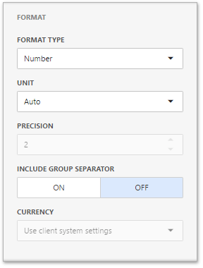
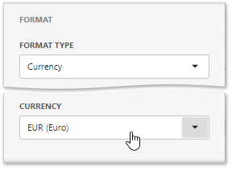

Formatting Data
The Web Dashboard allows you to customize various format settings for numeric and date-time values.
Formatting Numeric Values
To specify a format for numeric values, open the dashboard item Bindings menu, select a required data item and go to the Format section.

In the Format type field, select the required format type.
| Format Type | Description |
|---|---|
| Auto | Format settings are automatically determined based on the data type. |
| General | Converts a number to the most compact of either fixed-point or scientific notation, depending on the type of the number. |
| Number | Converts a number to a string of the "-d,ddd,ddd.ddd…" form where "-" indicates a negative number symbol (if required), "d" indicates a digit (0-9), "," indicates a group separator, and "." indicates a decimal point symbol. |
| Currency | Converts a number to a string that represents a currency amount. To learn about currency formatting specifics, see the Currency Formatting Specifics section of this document. |
| Scientific | Converts a number to a string of the "-d.ddd…E+ddd" or "-d.ddd…e+ddd" form where each "d" indicates a digit (0-9). |
| Percent | Multiplies a number by 100 and converts it to a percentage string. |
Other format settings are in effect for only specific format types.
| Setting | Description | Format Types |
|---|---|---|
| Unit | The unit to which values should be converted. | Number, Currency |
| Precision | The number of fractional digits that should be displayed. | Scientific, Percent |
| Include group separator | Specifies whether or not separators should be inserted between digit groups. | Number, Currency, Percent |
| Currency | Defines the currency sign and format settings that should be used to display currency values. To learn about currency formatting specifics, see the Currency Formatting Specifics section of this document. | Currency |
Formatting Date-Time Values
To specify a format for date-time values, use the Format Type option in the data item's Format section.

Note
Specific group intervals do not have format options. This means that corresponding values can only be presented in a single manner. The Format section is not displayed for such group intervals.
The following list shows format types by group interval.
- Year
- Full - The full year pattern (Example - 6/15/2017 1:45:30 PM -> 2017 (en-US)).
- Abbreviated - The year from 00 to 99 (Example - 6/15/2017 1:45:30 PM -> 17 (en-US)).
- Quarter
- Full - The full quarter pattern (Example: 6/15/2017 1:45:30 PM -> Q2 (en-US)).
- Numeric - The quarter from 1 through 4 (Example: 6/15/2017 1:45:30 PM -> 2 (en-US)).
- Month
- Full - The full name of the month (Example: 6/15/2017 1:45:30 PM -> June (en-US)).
- Abbreviated - The abbreviated name of the month (Example: 6/15/2017 1:45:30 PM -> Jun (en-US)).
- Numeric - The month from 1 through 12 (Example: 6/15/2017 1:45:30 PM -> 6 (en-US)).
- Hour
- Long - Long hour pattern, 12-hour format (Example: 6/15/2017 1:45:30 PM -> 1:00 PM).
- Short - Short hour pattern, 24-hour format (Example: 6/15/2017 1:45:30 PM -> 13).
- Day of Week
- Full - The full name of the day of the week (Example: 6/15/2017 1:45:30 PM -> Monday (en-US)).
- Abbreviated - The abbreviated name of the day of the week (Example: 6/15/2017 1:45:30 PM -> Mon (en-US)).
- Numeric - The day of the week from 1 through 7 (Example: 6/15/2017 1:45:30 PM -> 2 (en-US)).
- Day-Month-Year
- Long - Long date pattern (Example: 6/15/2017 1:45:30 PM -> Monday, June 15, 2017 (en-US)).
- Short - Short date pattern (Example: 6/15/2017 1:45:30 PM -> 6/15/2017 (en-US)).
- Date-Hour
- Long - Long date pattern, long hour pattern (Example: 6/15/2017 1:45:30 PM -> Monday, June 15, 2017 1:00 PM (en-US)).
- Short - Short date pattern, long hour pattern (Example: 6/15/2017 1:45:30 PM -> 6/15/2017 1:00 PM (en-US)).
- Time only - Long hour pattern (Example: 6/15/2017 1:45:30 PM -> 1:00 PM (en-US)).
- Date-Hour-Minute
- Long - Long date pattern, long time pattern (Example: 6/15/2017 1:45:30 PM -> Monday, June 15, 2017 1:45 PM (en-US)).
- Short - Short date pattern, long time pattern (Example: 6/15/2017 1:45:30 PM -> 6/15/2017 1:45 PM (en-US)).
- Time only - Long time pattern (Example: 6/15/2017 1:45:30 PM -> 1:45 PM (en-US)).
- Date-Hour-Minute-Second
- Long - Long date pattern, long time pattern (Example: 6/15/2017 1:45:30 PM -> Monday, June 15, 2017 1:45:30 PM (en-US)).
- Short - Short date pattern, long time pattern (Example: 6/15/2017 1:45:30 PM -> 6/15/2017 1:45:30 PM (en-US)).
- Time only - Long time pattern (Example: 6/15/2017 1:45:30 PM -> 1:45:30 PM (en-US)).
The list below illustrates format types related to the Exact Date group interval.
- Year
- Full - The full year pattern (Example: 6/15/2017 1:45:30 PM -> 2017 (en-US)).
- Abbreviated - The year from 00 to 99 (Example: 6/15/2017 1:45:30 PM -> 17 (en-US)).
- Quarter
- n/a - The default year and full quarter pattern (Example: 6/15/2017 1:45:30 PM -> Q2 2017 (en-US)).
- Month
- n/a - The default year pattern and the full name of the month (Example: 6/15/2017 1:45:30 PM -> June, 2017 (en-US)).
- Day
- Long - Long date pattern (Example: 6/15/2017 1:45:30 PM -> Monday, June 15, 2017 (en-US)).
- Short - Short date pattern (Example: 6/15/2017 1:45:30 PM -> 6/15/2017 (en-US)).
- Hour
- Long - Long date pattern, long time pattern (Example: 6/15/2017 1:45:30 PM -> Monday, June 15, 2017 1:00 PM (en-US)).
- Short - Short date pattern, long time pattern (Example: 6/15/2017 1:45:30 PM -> 6/15/2017 1:00 PM (en-US)).
- Time only - Long time pattern (Example: 6/15/2017 1:45:30 PM -> 1:00 PM (en-US)).
- Minute
- Long - Long date pattern, long time pattern (Example: 6/15/2017 1:45:30 PM -> Monday, June 15, 2017 1:45 PM (en-US)).
- Short - Short date pattern, long time pattern (Example: 6/15/2017 1:45:30 PM -> 6/15/2017 1:45 PM (en-US)).
- Time only - Long time pattern (Example: 6/15/2017 1:45:30 PM -> 1:45 PM (en-US)).
- Second
- Long - Long date pattern, long time pattern (Example: 6/15/2017 1:45:30 PM -> Monday, June 15, 2017 1:45:30 PM (en-US)).
- Short - Short date pattern, long time pattern (Example: 6/15/2017 1:45:30 PM -> 6/15/2017 1:45:30 PM (en-US)).
- Time only - Long time pattern (Example: 6/15/2017 1:45:30 PM -> 1:45:30 PM (en-US)).
Currency Formatting Specifics
The Web Dashboard allows you to specify currency formats for the current data item or for entire dashboard.
To set a data item currency format, open the dashboard item Bindings menu, select a required data item and go to the Format section. Select Currency as a format type and specify the required culture using the Currency combo box.

You can also specify the data item to use the client culture. For this, select the Use client system settings in the combo box.
To set the dashboard currency, open the dashboard menu and go to the Currency page. Here you can select the required currency from the list.

You can also specify the dashboard to use the client culture. For this, select the Use client system settings item.